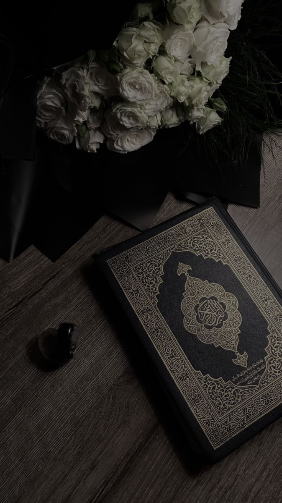
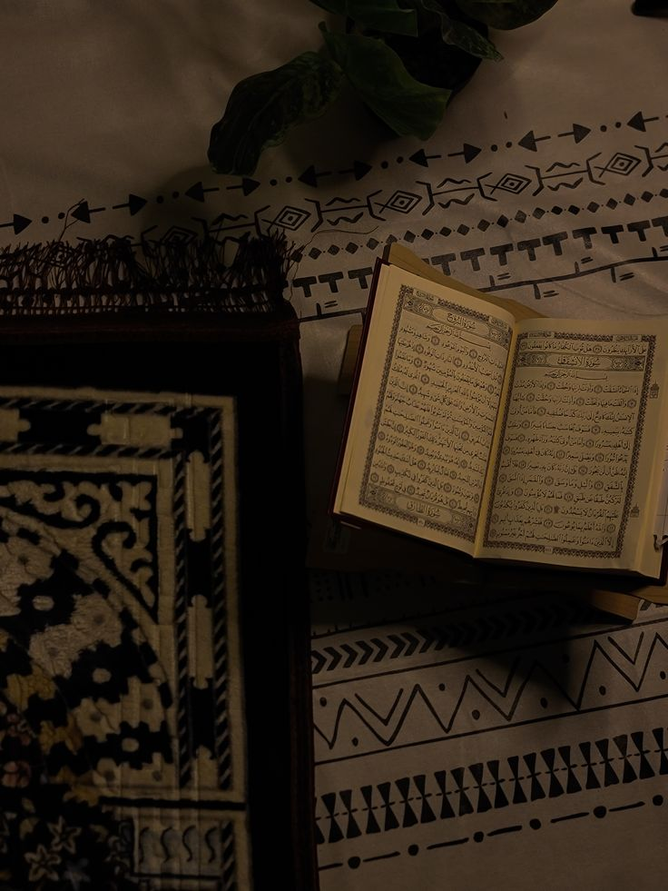
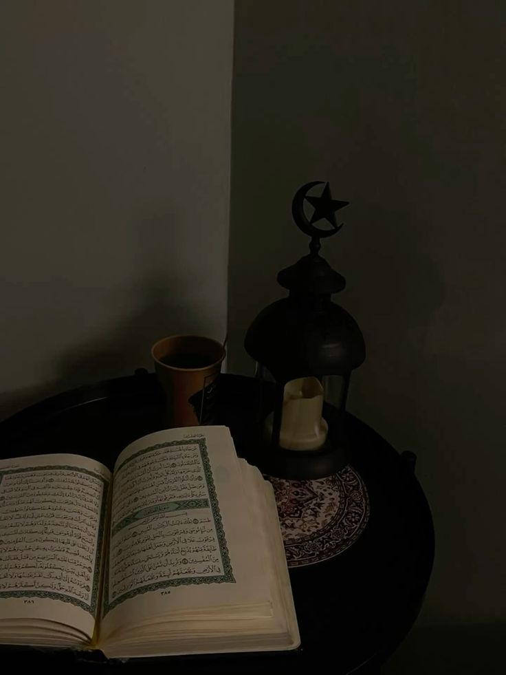

مرحبًا بكم في موقع القرآن الكريم
التحرير والتنوير
ابن عاشور
في ظلال القرآن
سيد قطب
الجامع لأحكام القرآن
القرطبي
تراجم المفسرين
- الطبري
- القرطبي
- ابن عاشور
- سيد قطب
جامع البيان في تفسير القرآن للإمام الطبري هو من أوائل التفاسير الشاملة التي اعتمدت الرواية أولاً ثم التحقيق والتحليل. يبدأ الطبري بذكر آيات الكتاب الكريم مع عرض متسلسل لأقوال الصحابة والتابعين، ويكشف عن أسباب النزول التي تساعد القارئ في فهم سياق الوحي. يولي الكتاب عناية كبيرة بالتحقيق اللغوي، حيث يقارن بين تراكيب الألفاظ وأساليب النحو لتوضيح المعنى الحقيقي لكل كلمة.
الإمام الطبري

الجامع لأحكام القرآن للإمام القرطبي يُعَدُّ مرجعًا فقهيًا ولغويًا متكاملاً، حيث يركز على الأحكام الشرعية المستنبطة من الآيات. يعرض القرطبي القاعدة الفقهية ثم يورد آراء مختلف المذاهب مع تحليل مستفيض لروح النص وأسباب النزول. يتناول الكتاب أيضاً البلاغة العربية، فيكشف عن الأصول البلاغية للكلمات ويشرح دلالتها الأسلوبية لتقوية الوقوف على إعجاز القرآن.
الإمام القرطبي

التحرير والتنوير لابن عاشور يُعَدُّ من أعمق التفاسير المعاصرة، إذ يجمع بين المناهج المأثورة والتحليل المقاصدي. يبدأ المفسر بدراسة مقاصد الشارع لكل آية، ثم يتتبع جذور الكلمات في القواميس العربية ويستعرض آراء النحاة والبلاغيين. يُلقي الكتاب الضوء على السياقات التاريخية والاجتماعية للنص ويقارن بين القراءات المختلفة،
العالم ابن عاشور
تفسير القرآن العظيم للإمام ابن كثير يُعَدُّ من أبرز التفاسير التي جمعت بين النقل والتحليل. يستهل ابن كثير تفسيره بالكتاب الكريم نفسه ثم يلجأ إلى السنة وأقوال الصحابة والتابعين، مع دقة بالغة في تدقيق الأسانيد. يخصص قسمًا لمناقشة الإسرائيليات وتنقيح الأحاديث الضعيفة، ويربط الأحكام الفقهية بالآيات مع الاستشهاد بأمثلة من الواقع.
الإمام ابن كثير
قالوا عن القرآن
أقوال مأثورة حول كتاب الله
من إعجاز القرآن صنيعه بالقلوب، وتأثيره في النفوس، فإنك لا تسمع كلامًا غير القرآن منظومًا ولا منثورًا، إذا قرع السمع خلص له القلب من اللذة والحلاوة في حال، ومن الروعة والمهابة في أخرى ما يخلص منه إليه تستبشر به النفوس، وتنشرح له الصدور، حتى إذا أخذت حظَّها منه عادت مرتاعةً قد عراها الوجيب والقَلَق، وتغشَّاها الخوف والفرق، تقشعرُّ منه الجلود، وتنزعج له القلوب، يحول بين النفس وبين مضمراتها وعقائدها الراسخة فيها.

اسماعيل الأصبهاني
عالم حديث ولغة
روائع من مكتبتنا القرآنية

تفسير القرآن العظيم لابن كثير يُعدُّ من أشهر التفاسير المعتمدة على الكتاب والسنة. يبتدئ ابن كثير بتفسير الآية بالقرآن أولًا ثم بالسنة ثم بأقوال الصحابة والتابعين، مع الحرص على تنقيح الأسانيد وتنبيه القارئ إلى الإسرائيليات. يتميز الكتاب بالطابع العلمي والتحقيق الدقيق، حيث يوضح مناسبات النزول ويشرح المراد من الألفاظ في ضوء مباحث النحو والبلاغة.
تفسير ابن كثير
95$ 80$

في ظلال القرآن لسيد قطب، تفسير معاصر يتجاوز شرح اللفظ إلى استنباط المعاني والغايات الأخلاقية والاجتماعية. يجمع الكاتب بين التأمل الروحي والتفسير البلاغي، ويناقش دور النص القرآني في بناء الفرد والمجتمع. يتضمن الكتاب طرائق تأويلية تربط بين الآية ومواضيع الحياة المعاصرة، مع عرض للمفاهيم الأساسية كالعدل والرحمة والتربية
في ظلال القرآن
75$ 80$

التحرير والتنوير من أعمق التفاسير المعاصرة، يجمع بين منهج التفسير المأثور والتحليل اللغوي الدقيق، مع التركيز على البعد المقاصدي للنصوص. انطلق ابن عاشور في تفسيره من فهم مقاصد الشارع والغاية من كل آية، ثم درس الألفاظ من خلال أصول اللغة العربية ومدارس البلاغة.
التحرير والتنوير
130$ 80$

جامع البيان في تفسير القرآن للإمام الطبري هو أول تفسير جامع منهجي اعتمد النقل تارةً والترجيح تارةً أخرى بين أقوال الصحابة والتابعين. يبدأ الطبري بذكر الآية ثم يستعرض أسباب نزولها والوثائق النثرية واللغوية المتعلقة بها. يهتم الكتاب بالتحقيق اللغوي لكل كلمة ويقارن بين الروايات المختلفة.
جامع البيان
120$ 80$
إضاءات قرآنية معاصرة
تفسير السعدي
تأليف الشيخ عبد الرحمن بن ناصر السعدي، يقدم تفسيرًا موجزًا واضحًا يجمع بين دلالات الآيات وأحكامها، مع التركيز على مفردات القرآن وأسباب النزول بأسلوبٍ سلس .
عرض الكتابدستور الاستخلاف في الأرض
جزء مستقل من عمل الدكتور رافت المصري يسلط الضوء على مفهوم “الاستخلاف” كما عرضته آيات القرآن، موضحًا مسؤولية الإنسان في تنفيذ أحكام الله وتنظيم الحياة.
عرض الكتابالتفسير الموضوعي للقرآن الكريم
يربط هذا التفسير آيات القرآن وفقًا للموضوعات الكبرى (العقيدة، الأخلاق، التشريع)، مما يسهل على القارئ دراسة كل قضية بشكل متكامل دون التشتت بين السور المختلفة.
عرض الكتاب